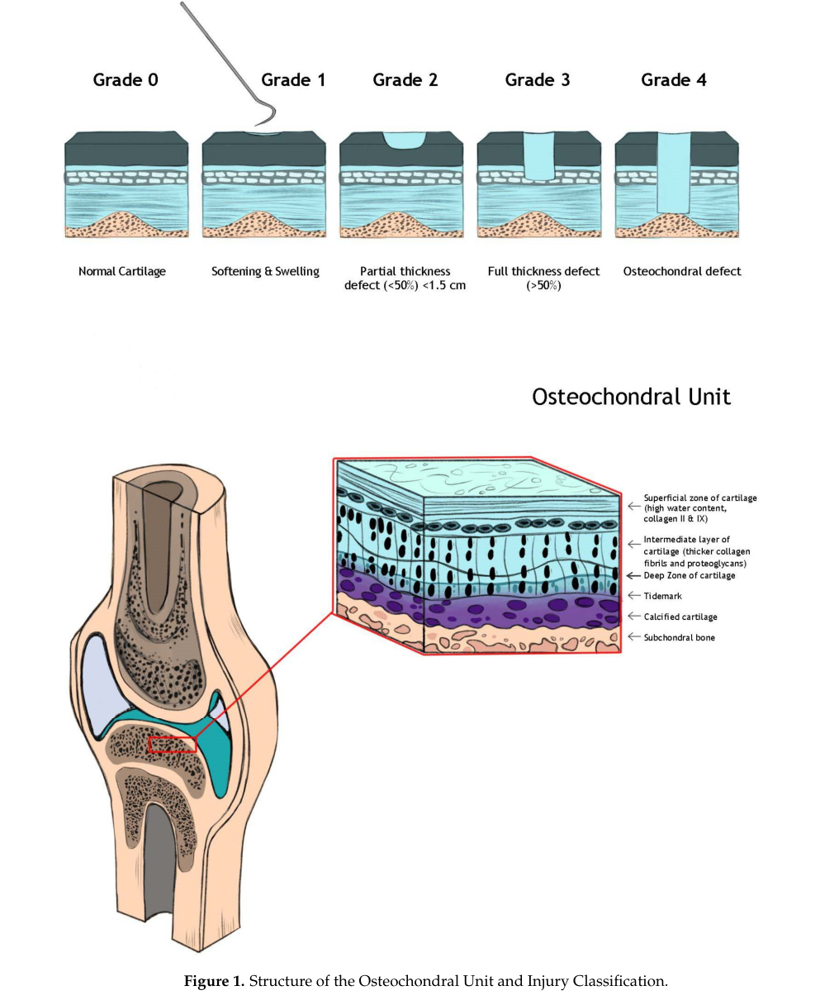

A focal articular cartilage defect of the knee is a discrete, full-thickness lesion of the hyaline articular cartilage of the femoral condyle, trochlea, or patella, typically arising from acute traumatic injury, osteochondritis dissecans, or repetitive mechanical overload. Unlike osteoarthritis — a diffuse, degenerative whole-joint disease — a focal chondral defect is a localized structural injury surrounded by relatively healthy cartilage. Because mature hyaline cartilage is avascular and aneural and its chondrocytes have minimal proliferative or migratory capacity, a full-thickness defect does not heal spontaneously: it either persists or fills with biomechanically inferior fibrocartilage. The unrepaired or poorly repaired surface produces symptomatic mechanical dysfunction and is a recognized driver of progression to secondary osteoarthritis. This entry is distinct from the degenerative osteoarthritis entry and is the lesion targeted by cartilage-restoration procedures such as matrix-applied autologous chondrocyte implantation (MACI) and marrow-stimulation techniques.
Ask a research question about Focal Articular Cartilage Defect of the Knee. OpenScientist will conduct autonomous deep research using the Disorder Mechanisms Knowledge Base and PubMed literature (typically 10-30 minutes).
Do not include personal health information in your question. Questions and results are cached in your browser's local storage.

name: Focal Articular Cartilage Defect of the Knee
creation_date: "2026-06-12T16:10:00Z"
category: Acquired Musculoskeletal Disorder
disease_term:
term:
id: MONDO:0003816
label: articular cartilage disorder
preferred_term: Focal articular cartilage defect of the knee
description: >-
A focal articular cartilage defect of the knee is a discrete, full-thickness
lesion of the hyaline articular cartilage of the femoral condyle, trochlea, or
patella, typically arising from acute traumatic injury, osteochondritis
dissecans, or repetitive mechanical overload. Unlike osteoarthritis — a
diffuse, degenerative whole-joint disease — a focal chondral defect is a
localized structural injury surrounded by relatively healthy cartilage.
Because mature hyaline cartilage is avascular and aneural and its chondrocytes
have minimal proliferative or migratory capacity, a full-thickness defect does
not heal spontaneously: it either persists or fills with biomechanically
inferior fibrocartilage. The unrepaired or poorly repaired surface produces
symptomatic mechanical dysfunction and is a recognized driver of progression
to secondary osteoarthritis. This entry is distinct from the degenerative
osteoarthritis entry and is the lesion targeted by cartilage-restoration
procedures such as matrix-applied autologous chondrocyte implantation (MACI)
and marrow-stimulation techniques.
parents:
- Articular cartilage disorder
mappings:
mondo_mappings:
- term:
id: MONDO:0003816
label: articular cartilage disorder
mapping_predicate: skos:broadMatch
mapping_source: manual curation
mapping_justification: >-
MONDO has no specific term for a focal traumatic full-thickness articular
cartilage defect of the knee. MONDO:0003816 (articular cartilage disorder)
is the closest available broader parent, so the disease_term binding is a
broadMatch rather than an exact match; a more specific MONDO term should be
requested upstream.
prevalence:
- population: Focal chondral defects requiring surgery (United States)
notes: >-
Focal chondral defects of the knee are common and impose a substantial
surgical burden, with approximately 200,000 procedures performed annually in
the United States.
evidence:
- reference: PMID:34507359
reference_title: "The Large Focal Isolated Chondral Lesion."
supports: SUPPORT
evidence_source: HUMAN_CLINICAL
snippet: "the number of surgical procedures performed for FCDs, which is now approximately 200,000 annually"
explanation: Quantifies the surgical burden of focal chondral defects of the knee.
pathophysiology:
- name: Full-Thickness Chondral Injury
description: >-
An acute traumatic shear/impact load, osteochondritis dissecans, or
repetitive microtrauma produces a discrete full-thickness defect of the
hyaline articular cartilage, disrupting the smooth load-bearing joint surface
while leaving the surrounding cartilage relatively intact. The lesion may be
purely chondral or osteochondral when it extends into the subchondral bone;
because the cartilage and its supporting subchondral plate function together
as an osteochondral unit, the extent of subchondral disease shapes both the
mechanical consequences and the choice of restoration procedure.
cell_types:
- preferred_term: Chondrocyte
term:
id: CL:0000138
label: chondrocyte
locations:
- preferred_term: articular cartilage
term:
id: UBERON:0010996
label: articular cartilage of joint
- preferred_term: knee joint
term:
id: UBERON:0001465
label: knee
cellular_components:
- preferred_term: extracellular matrix
term:
id: GO:0031012
label: extracellular matrix
evidence:
- reference: PMID:40964061
reference_title: "Cartilage Conundrum: Investigating Outcomes in Knee Cartilage Restoration Techniques."
supports: SUPPORT
evidence_source: HUMAN_CLINICAL
snippet: "avascularity of articular cartilage and the limited ability to proliferate and promote repair"
explanation: Establishes the focal chondral lesion of the knee as a structural cartilage injury in a tissue with intrinsically limited repair capacity.
- reference: PMID:38534520
reference_title: "Knee Joint Preservation in Tactical Athletes: A Comprehensive Approach Based upon Lesion Location and Restoration of the Osteochondral Unit."
supports: SUPPORT
evidence_source: HUMAN_CLINICAL
snippet: "The management of OCL is predicated on certain injury characteristics, including lesion location and the extent of subchondral disease"
explanation: Confirms that lesion location and subchondral bone involvement define the osteochondral injury and drive management, supporting the chondral-versus-osteochondral distinction.
images:
- Focal_Articular_Cartilage_Defect_of_the_Knee-deep-research-falcon_artifacts/image-1.png
downstream:
- target: Impaired Intrinsic Cartilage Repair
description: A full-thickness defect in avascular hyaline cartilage cannot recruit a normal vascular healing response.
- name: Impaired Intrinsic Cartilage Repair
description: >-
Mature hyaline articular cartilage is avascular, alymphatic, and aneural,
and its resident chondrocytes are entrapped in a dense matrix with little
capacity to proliferate or migrate into a defect. Consequently a
full-thickness chondral lesion has minimal intrinsic self-repair and the
damage is frequently permanent.
cell_types:
- preferred_term: Chondrocyte
term:
id: CL:0000138
label: chondrocyte
locations:
- preferred_term: articular cartilage
term:
id: UBERON:0010996
label: articular cartilage of joint
biological_processes:
- preferred_term: cartilage development
term:
id: GO:0051216
label: cartilage development
modifier: DECREASED
- preferred_term: wound healing
term:
id: GO:0042060
label: wound healing
modifier: DECREASED
evidence:
- reference: PMID:28244303
reference_title: "Autologous chondrocyte implantation in the knee: systematic review and economic evaluation."
supports: SUPPORT
evidence_source: HUMAN_CLINICAL
snippet: "Articular cartilage has very little capacity for self-repair, so damage may be permanent"
explanation: Directly supports the core mechanism that a focal full-thickness defect does not heal because of the limited intrinsic repair capacity of hyaline cartilage.
downstream:
- target: Fibrocartilaginous Repair Tissue Formation
description: In the absence of true hyaline regeneration, any spontaneous or marrow-derived fill is fibrocartilaginous rather than hyaline.
- target: Progression to Secondary Osteoarthritis
description: A persistent unrepaired surface defect alters joint load distribution and drives degenerative change.
- name: Fibrocartilaginous Repair Tissue Formation
description: >-
When repair does occur — spontaneously or after marrow-stimulation
procedures (microfracture, drilling, abrasion arthroplasty) — bone-marrow
mesenchymal stromal cells populate the defect and produce type I
collagen-rich fibrocartilage rather than type II collagen hyaline cartilage.
This fibrocartilage is biomechanically inferior and degrades over time, so
it does not durably restore the articular surface.
cell_types:
- preferred_term: Marrow-derived mesenchymal stromal cell
term:
id: CL:0000134
label: mesenchymal stem cell
cellular_components:
- preferred_term: extracellular matrix
term:
id: GO:0031012
label: extracellular matrix
biological_processes:
- preferred_term: extracellular matrix organization
term:
id: GO:0030198
label: extracellular matrix organization
modifier: INCREASED
evidence:
- reference: PMID:9533054
reference_title: "Current treatment options for the restoration of articular cartilage."
supports: SUPPORT
evidence_source: HUMAN_CLINICAL
snippet: "produce only fibrocartilage and therefore do not offer a long-term cure"
explanation: Supports that marrow-stimulation repair of chondral defects yields biomechanically inferior fibrocartilage rather than durable hyaline cartilage.
downstream:
- target: Progression to Secondary Osteoarthritis
description: Inferior fibrocartilage degrades under load, leaving the joint surface vulnerable to degenerative progression.
- name: Progression to Secondary Osteoarthritis
conforms_to: "osteoarthritis_cartilage_degradation#Mechanical Overload and Chondrocyte Stress"
description: >-
An untreated or inadequately repaired focal chondral defect concentrates
mechanical stress on adjacent cartilage and subchondral bone, promoting
progressive cartilage loss that converges on the degenerative phenotype of
secondary osteoarthritis and may ultimately require joint replacement. This
is post-traumatic osteoarthritis: the focal lesion is the discrete injury
that imposes the abnormal mechanical loading and chondrocyte stress program
captured by the conserved osteoarthritis degradation module, motivating early
restoration of the articular surface.
cell_types:
- preferred_term: Chondrocyte
term:
id: CL:0000138
label: chondrocyte
biological_processes:
- preferred_term: response to mechanical stimulus
term:
id: GO:0009612
label: response to mechanical stimulus
modifier: INCREASED
- preferred_term: cellular response to stress
term:
id: GO:0033554
label: cellular response to stress
modifier: INCREASED
locations:
- preferred_term: articular cartilage
term:
id: UBERON:0010996
label: articular cartilage of joint
evidence:
- reference: PMID:40964061
reference_title: "Cartilage Conundrum: Investigating Outcomes in Knee Cartilage Restoration Techniques."
supports: SUPPORT
evidence_source: HUMAN_CLINICAL
snippet: "Untreated lesions can lead to early development of arthritis and the need for joint replacement"
explanation: Supports the causal link from an untreated focal cartilage defect to secondary osteoarthritis and eventual arthroplasty.
phenotypes:
- name: Activity-related knee pain
description: >-
Localized, activity-related knee pain and functional limitation are the
cardinal symptoms of a symptomatic focal cartilage defect and are the
primary outcomes measured in cartilage-repair trials. Because mature
articular cartilage is itself aneural, the pain is thought to arise from
secondary synovial inflammation and increased load on the innervated
subchondral bone rather than from the cartilage lesion directly.
phenotype_term:
preferred_term: Knee pain
term:
id: HP:0030839
label: Knee pain
evidence:
- reference: PMID:24714783
reference_title: "Matrix-Applied Characterized Autologous Cultured Chondrocytes Versus Microfracture: Two-Year Follow-up of a Prospective Randomized Trial."
supports: SUPPORT
evidence_source: HUMAN_CLINICAL
snippet: "The mean KOOS pain and function subscores from baseline to 2 years were significantly more improved with MACI than with MFX"
explanation: Pain (KOOS pain) is a co-primary clinical manifestation of symptomatic knee cartilage defects and improves with cartilage repair.
- reference: PMID:34507359
reference_title: "The Large Focal Isolated Chondral Lesion."
supports: SUPPORT
evidence_source: HUMAN_CLINICAL
snippet: "Focal chondral defects (FCDs) of the knee can be a debilitating condition that can clinically translate into pain and dysfunction in young patients with high activity demands"
explanation: Establishes pain and dysfunction in young, active patients as the defining clinical presentation of focal chondral defects.
- reference: PMID:38534520
reference_title: "Knee Joint Preservation in Tactical Athletes: A Comprehensive Approach Based upon Lesion Location and Restoration of the Osteochondral Unit."
supports: SUPPORT
evidence_source: HUMAN_CLINICAL
snippet: "Osteochondral lesions (OCL) of the knee have long been acknowledged as significant sources of knee pain and functional deficits"
explanation: Independent review confirming knee pain and functional deficit as the core manifestations of focal osteochondral lesions.
- name: Joint swelling
description: >-
Recurrent effusion/swelling of the affected knee is common, reflecting
synovial irritation from the chondral lesion and debris.
phenotype_term:
preferred_term: Joint swelling
term:
id: HP:0001386
label: Joint swelling
- name: Mechanical symptoms and restricted motion
description: >-
Catching, locking, and giving-way with limitation of knee motion occur when
a chondral flap or loose body mechanically obstructs the joint.
phenotype_term:
preferred_term: Limitation of joint mobility
term:
id: HP:0001376
label: Limitation of joint mobility
evidence:
- reference: PMID:34507359
reference_title: "The Large Focal Isolated Chondral Lesion."
supports: SUPPORT
evidence_source: HUMAN_CLINICAL
snippet: "can clinically translate into pain and dysfunction in young patients with high activity demands"
explanation: Focal chondral defects produce mechanical dysfunction and functional limitation of the knee in young, active patients.
- name: Secondary osteoarthritis
description: >-
An untreated focal defect is a recognized precursor of secondary
osteoarthritis of the knee.
phenotype_term:
preferred_term: Osteoarthritis
term:
id: HP:0002758
label: Osteoarthritis
clinical_course: PROGRESSIVE
evidence:
- reference: PMID:40964061
reference_title: "Cartilage Conundrum: Investigating Outcomes in Knee Cartilage Restoration Techniques."
supports: SUPPORT
evidence_source: HUMAN_CLINICAL
snippet: "Untreated lesions can lead to early development of arthritis and the need for joint replacement"
explanation: Documents progression of untreated cartilage lesions to osteoarthritis.
treatments:
- name: Matrix-Applied Autologous Chondrocyte Implantation (MACI)
description: >-
Two-stage autologous cell therapy for symptomatic full-thickness cartilage
defects of the knee. Chondrocytes are arthroscopically harvested, expanded
in culture, and seeded onto a porcine type I/III collagen membrane that is
implanted into the debrided defect to regenerate hyaline-like cartilage. In
the randomized SUMMIT trial, MACI was clinically and statistically superior
to microfracture for symptomatic defects of the knee. MACI is indicated for
focal cartilage defects, not for generalized osteoarthritis.
therapeutic_modality: CELL_THERAPY
treatment_term:
preferred_term: cellular therapy
term:
id: MAXO:0000016
label: cellular therapy
therapeutic_agent:
- preferred_term: autologous cultured chondrocytes
term:
id: NCIT:C87436
label: Autologous Cultured Chondrocytes
target_mechanisms:
- target: Impaired Intrinsic Cartilage Repair
treatment_effect: RESTORES
description: MACI implants cultured autologous chondrocytes to regenerate hyaline-like cartilage, directly compensating for the cartilage's failed intrinsic repair.
evidence:
- reference: PMID:24714783
reference_title: "Matrix-Applied Characterized Autologous Cultured Chondrocytes Versus Microfracture: Two-Year Follow-up of a Prospective Randomized Trial."
supports: SUPPORT
evidence_source: HUMAN_CLINICAL
snippet: "MACI offers a more efficacious alternative than MFX with a similar safety profile for the treatment of symptomatic articular cartilage defects of the knee"
explanation: Randomized controlled evidence that MACI is efficacious for symptomatic focal cartilage defects of the knee.
- name: Microfracture (marrow stimulation)
description: >-
A single-stage arthroscopic marrow-stimulation procedure in which small
perforations are made in the subchondral bone to recruit marrow mesenchymal
cells into the defect. It is technically simple and lower cost but produces
biomechanically inferior fibrocartilage and is generally less durable than
cell-based repair for larger defects.
therapeutic_modality: SURGERY
treatment_term:
preferred_term: surgical procedure
term:
id: MAXO:0000004
label: surgical procedure
target_mechanisms:
- target: Impaired Intrinsic Cartilage Repair
treatment_effect: BYPASSES
description: Perforating the subchondral plate recruits marrow mesenchymal cells into the defect, bypassing the avascular cartilage's failed intrinsic repair, but the resulting fill is fibrocartilage.
evidence:
- reference: PMID:9533054
reference_title: "Current treatment options for the restoration of articular cartilage."
supports: PARTIAL
evidence_source: HUMAN_CLINICAL
snippet: "produce only fibrocartilage and therefore do not offer a long-term cure"
explanation: Marrow-stimulation techniques relieve symptoms but generate fibrocartilage rather than durable hyaline repair.
- name: Osteochondral Allograft Transplantation
description: >-
Transplantation of size-matched donor osteochondral plugs (mature hyaline
cartilage on a supporting bone base) into the debrided defect. It is a
restorative option reserved for larger or deeper lesions and osteochondral
defects involving the subchondral bone, where surface-based or marrow-
stimulation techniques are less durable.
therapeutic_modality: SURGERY
treatment_term:
preferred_term: surgical procedure
term:
id: MAXO:0000004
label: surgical procedure
target_mechanisms:
- target: Full-Thickness Chondral Injury
treatment_effect: RESTORES
description: A mature osteochondral graft physically replaces the defect, restoring the articular surface and, for osteochondral lesions, the underlying subchondral bone.
- target: Impaired Intrinsic Cartilage Repair
treatment_effect: BYPASSES
description: Transplanting pre-formed mature hyaline cartilage bypasses the need for intrinsic repair the host cartilage cannot achieve.
evidence:
- reference: PMID:34507359
reference_title: "The Large Focal Isolated Chondral Lesion."
supports: SUPPORT
evidence_source: HUMAN_CLINICAL
snippet: "chondral lesions that involve a larger area or depth require restorative procedures such as osteochondral allograft transplantation or other cell-based techniques"
explanation: Supports osteochondral allograft transplantation as the restorative approach for larger or deeper focal chondral lesions.
- name: Osteochondral Autograft Transfer (OAT / mosaicplasty)
description: >-
Transfer of one or more autologous osteochondral plugs harvested from a
low-weightbearing region of the knee into the defect, restoring the surface
with the patient's own mature hyaline cartilage. It is generally used for
smaller focal osteochondral lesions. A 10-year randomized trial in athletes
found OAT gave higher rates of return to and maintenance of preinjury-level
sport than microfracture.
therapeutic_modality: SURGERY
treatment_term:
preferred_term: surgical procedure
term:
id: MAXO:0000004
label: surgical procedure
target_mechanisms:
- target: Full-Thickness Chondral Injury
treatment_effect: RESTORES
description: Autologous osteochondral plugs physically restore the cartilage (and subchondral) surface at the defect.
- target: Impaired Intrinsic Cartilage Repair
treatment_effect: BYPASSES
description: Grafting mature autologous hyaline cartilage bypasses the cartilage's failed intrinsic repair.
evidence:
- reference: PMID:23024150
reference_title: "Ten-year follow-up of a prospective, randomized clinical study of mosaic osteochondral autologous transplantation versus microfracture for the treatment of osteochondral defects in the knee joint of athletes."
supports: SUPPORT
evidence_source: HUMAN_CLINICAL
snippet: "The OAT technique for ACD or OCD repair in the athletic population allows for a higher rate of return to and maintenance of sports at the preinjury level compared with MF"
explanation: A 10-year randomized controlled trial supports osteochondral autograft transfer as superior to microfracture for return to sport after focal osteochondral defects.
references:
- reference: PMID:24714783
title: "Matrix-Applied Characterized Autologous Cultured Chondrocytes Versus Microfracture: Two-Year Follow-up of a Prospective Randomized Trial."
- reference: PMID:28244303
title: "Autologous chondrocyte implantation in the knee: systematic review and economic evaluation."
- reference: PMID:40964061
title: "Cartilage Conundrum: Investigating Outcomes in Knee Cartilage Restoration Techniques."
- reference: PMID:9533054
title: "Current treatment options for the restoration of articular cartilage."
- reference: PMID:34507359
title: "The Large Focal Isolated Chondral Lesion."
- reference: PMID:38534520
title: "Knee Joint Preservation in Tactical Athletes: A Comprehensive Approach Based upon Lesion Location and Restoration of the Osteochondral Unit."
- reference: PMID:23024150
title: "Ten-year follow-up of a prospective, randomized clinical study of mosaic osteochondral autologous transplantation versus microfracture for the treatment of osteochondral defects in the knee joint of athletes."
Question: You are an expert researcher providing comprehensive, well-cited information.
Provide detailed information focusing on: 1. Key concepts and definitions with current understanding 2. Recent developments and latest research (prioritize 2023-2024 sources) 3. Current applications and real-world implementations 4. Expert opinions and analysis from authoritative sources 5. Relevant statistics and data from recent studies
Format as a comprehensive research report with proper citations. Include URLs and publication dates where available. Always prioritize recent, authoritative sources and provide specific citations for all major claims.
Please provide a comprehensive research report on Focal Articular Cartilage Defect of the Knee covering all of the disease characteristics listed below. This report will be used to populate a disease knowledge base entry. Be thorough and cite primary literature (PMID preferred) for all claims.
For each section, suggested databases/resources are listed. These are the first places you should search for information on each topic.
Search first: OMIM, Orphanet, ICD-10/ICD-11, MeSH, PubMed
Search first: PubMed, Cochrane Library, UpToDate, clinical guidelines, ClinVar, ClinGen, GWAS Catalog, PheGenI, CTD, CDC, WHO, epidemiological databases
Search first: PubMed, Cochrane Library, clinical trial databases, GWAS Catalog, gnomAD, WHO, CDC, nutrition databases
Search first: CTD, PubMed, PheGenI, GxE databases
Search first: HPO (Human Phenotype Ontology), OMIM, Orphanet, PubMed, clinicaltrials.gov, MedDRA, SNOMED CT, DECIPHER, LOINC
For each phenotype, provide: - Phenotype type: symptoms, clinical signs, physical manifestations, behavioral changes, or laboratory abnormalities
For symptoms/signs: HPO, OMIM, Orphanet, PubMed For behavioral changes: HPO, DSM, RDoC (Research Domain Criteria), PubMed For laboratory abnormalities: LOINC, SNOMED CT, LabTests Online, PubMed - Phenotype characteristics: Search first: OMIM, Orphanet, HPO, PubMed - Age of symptom onset (neonatal, childhood, adult-onset, late-onset) - Symptom severity (mild, moderate, severe, variable) - Symptom progression (stable, progressive, episodic, fluctuating) - Frequency among affected individuals (percentage or qualitative) - Quality of life impact: Effects on daily functioning and well-being (per-phenotype when possible) Search first: EQ-5D database, SF-36, WHO QOL databases, PubMed - Suggest HPO (Human Phenotype Ontology) terms for each phenotype
Search first: OMIM, ClinVar, HGMD, Ensembl, NCBI Gene
Search first: ENCODE, Roadmap Epigenomics, MethBase, DiseaseMeth
Search first: DECIPHER, ClinVar, ECARUCA, UCSC Genome Browser
Search first: CTD (Comparative Toxicogenomics Database), TOXNET, PubMed, EPA databases
Search first: CDC databases, WHO, PubMed, NHANES
Search first: NCBI Taxonomy, ViPR, BV-BRC, MicrobeDB, GIDEON
Search first: KEGG, Reactome, WikiPathways, PathBank, BioCyc
Search first: Gene Ontology (GO), Reactome, KEGG, PubMed
Search first: UniProt, PDB (Protein Data Bank), InterPro, Pfam, AlphaFold
Search first: KEGG, BioCyc, HMDB (Human Metabolome Database), BRENDA
Search first: ImmPort, Immunome Database, IEDB, Gene Ontology
Search first: PubMed, Gene Ontology, Reactome
Search first: BRENDA, UniProt, KEGG, OMIM, PubMed
Search first: ENCODE, Roadmap Epigenomics, MethBase, DiseaseMeth
For each mechanism, describe: - The causal chain from initial trigger to clinical manifestation - Which mechanisms are upstream vs downstream - What cell types and biological processes are involved - Suggest GO terms for biological processes and CL terms for cell types
Search first: Uberon, FMA (Foundational Model of Anatomy), OMIM, HPO, ICD-11, MeSH, SNOMED CT
Search first: Uberon, Human Protein Atlas, Cell Ontology, Human Cell Atlas, CellMarker, PanglaoDB
Search first: Gene Ontology (Cellular Component), UniProt, Human Protein Atlas
Search first: OMIM, Orphanet, HPO, PubMed
Search first: Disease registries, longitudinal cohort databases, natural history studies, PubMed, Orphanet, OMIM
Search first: Orphanet, CDC, WHO, GBD (Global Burden of Disease), national registries, SEER, disease registries
Search first: GTR (Genetic Testing Registry), GeneReviews, ClinGen
For each treatment, suggest MAXO (Medical Action Ontology) terms where applicable.
Search first: CDC vaccine schedules, WHO immunization, FDA vaccine database
Search first: CDC, WHO, behavioral intervention databases, Cochrane Library
Search first: NSGC resources, ACMG guidelines, GeneReviews
Search first: Clinical guidelines, FDA approvals, PubMed
Search first: NCBI Taxonomy
Search first: VBO (Vertebrate Breed Ontology)
Search first: NCBI Gene
Structure your response as a comprehensive narrative organized by the sections above. For each section, provide: - Factual content with specific details (numbers, percentages, gene names, variant nomenclature) - Ontology term suggestions (HPO, GO, CL, UBERON, CHEBI, MAXO, MONDO) where applicable - Evidence citations with PMIDs - Direct quotes from abstracts to support key claims - Clear indication when information is not available or not applicable for this disease
This report will be used to populate a disease knowledge base entry with: - Pathophysiology descriptions with causal chains - Gene/protein annotations (HGNC, GO terms) - Phenotype associations (HP terms) with frequencies - Cell type involvement (CL terms) - Anatomical locations (UBERON terms) - Chemical entities (CHEBI terms) - Treatment annotations (MAXO terms) - Evidence items with PMIDs and exact abstract quotes - Epidemiology, prognosis, diagnostic, and prevention information - Animal model descriptions with phenotype recapitulation details
Focal articular cartilage defects (also termed focal chondral defects or osteochondral lesions/defects when subchondral bone is involved) are localized injuries of knee joint surface cartilage that can cause pain, swelling, and functional limitation and may predispose to accelerated degenerative change/osteoarthritis if untreated. These defects are common findings at arthroscopy, yet can be clinically “silent” with limited specific physical exam findings, making imaging and arthroscopic confirmation central to diagnosis and staging. Management is lesion- and patient-specific and spans nonoperative symptom control to reparative marrow stimulation and restorative cell- or graft-based procedures; recent work emphasizes the “osteochondral unit” and the prognostic importance of subchondral bone pathology on MRI. (chahla2023thelargefocal pages 1-2, chahla2023thelargefocal pages 2-3, cognetti2024kneejointpreservation pages 2-4)
Important limitation: In the retrieved primary/secondary literature and trial records available in this run, explicit ICD-10/ICD-11, SNOMED CT, and MONDO identifiers were generally not provided. Only partial ontology mapping could be extracted.
(These are ontology suggestions for knowledge base encoding; they are not explicitly enumerated in the cited papers.) - Knee pain: HP:0002829 - Joint swelling: HP:0001386 - Abnormal knee joint mobility/instability (when present): HP:0003041 - Abnormal gait / difficulty walking: HP:0001288 / HP:0002355 - Reduced ability to participate in sports / activity limitation: could be captured via functional outcome instruments rather than a single HPO term.
1) Trigger (acute trauma or chronic overload/instability) → 2) Cartilage surface disruption (partial- to full-thickness) ± subchondral bone involvement/edema → 3) Mechanical dysfunction of the osteochondral unit and altered load transfer → 4) Synovial inflammation and subchondral overload drive pain and may promote progression → 5) Progressive cartilage loss and possible evolution toward osteoarthritis. Pain is emphasized as likely arising from synovial inflammation and subchondral overload rather than cartilage innervation. (chahla2023thelargefocal pages 2-3, cognetti2024kneejointpreservation pages 2-4)
Clinical practice typically follows an algorithm based on lesion size, depth, location, and subchondral bone status; a treatment algorithm is illustrated in Cognetti et al. (Bioengineering 2024). (cognetti2024kneejointpreservation media 9bfbdade)
| Intervention/approach | Typical lesion characteristics/indications (size, depth, location, subchondral bone involvement) | Evidence type | Key recent findings/statistics with follow-up | Example 2023-2024 source (DOI/URL) | Example ClinicalTrials.gov NCT | Notes/limitations |
|---|---|---|---|---|---|---|
| Microfracture (marrow stimulation) | Common first-line reparative option for smaller full-thickness chondral/osteochondral knee defects; used for ICRS grade 3-4 lesions; less favorable when lesions are larger, patellofemoral/trochlear, weightbearing, degenerative, or when prior ipsilateral surgery has occurred (tuijn2023prognosticfactorsfor pages 1-2, tseng2024biphasiccartilagerepair pages 1-2, chahla2023thelargefocal pages 4-5) | Systematic review; active comparator in RCTs | Prognostic review found worse outcomes associated with higher age, larger lesion size, longer symptom duration, and prior ipsilateral surgery; favorable factors included nondegenerative mechanism, single lesion, and non-patellofemoral/non-weightbearing location. In Tseng 2024, microfracture improved IKDC by 27.51 ± 23.65 at 12 months in the control arm (tuijn2023prognosticfactorsfor pages 1-2, tseng2024biphasiccartilagerepair pages 1-2) | van Tuijn 2023, Cartilage 14:5-16. DOI: 10.1177/19476035221147680. https://doi.org/10.1177/19476035221147680 (tuijn2023prognosticfactorsfor pages 1-2); Tseng 2024 DOI: 10.1186/s10195-024-00802-1 https://doi.org/10.1186/s10195-024-00802-1 (tseng2024biphasiccartilagerepair pages 1-2) | NCT00719576; NCT03588975 (NCT00719576 chunk 1, NCT03588975 chunk 1) | Produces fibrocartilaginous rather than hyaline cartilage; concerns include subchondral sclerosis/cysts and potential impairment of later restorative options; durability concerns in larger/high-demand lesions (tseng2024biphasiccartilagerepair pages 1-2, tuijn2023prognosticfactorsfor pages 1-2) |
| Biphasic cartilage repair implant (BiCRI; autologous minced cartilage-based biphasic osteochondral construct) | Symptomatic femoral condyle/trochlear lesions; age <55 years; single lesion; lesion size <23 mm × 12.5 mm; ICRS grade 3-4 / Outerbridge 4 / OCD grade 3-4; designed for focal chondral or osteochondral defects with subchondral support component (tseng2024biphasiccartilagerepair pages 2-4) | Prospective multicenter randomized non-inferiority trial | 92 randomized patients across 9 hospitals; 47 BiCRI and 45 microfracture completed follow-up. At 12 months, mean IKDC change was 25.56 ± 18.48 for BiCRI vs 27.51 ± 23.65 for microfracture; 95% CI for difference (BiCRI minus microfracture) −6.95, exceeding the non-inferiority margin of −12. Arthroscopy showed more fully regenerated cartilage in BiCRI group (tseng2024biphasiccartilagerepair pages 1-2) | Tseng 2024, J Orthop Traumatol 25:62. DOI: 10.1186/s10195-024-00802-1. https://doi.org/10.1186/s10195-024-00802-1 (tseng2024biphasiccartilagerepair pages 1-2) | NCT01477008 (tseng2024biphasiccartilagerepair pages 1-2) | Short-term data only in provided snippet; comparator outcomes were similar clinically at 12 months despite better arthroscopic regeneration with BiCRI (tseng2024biphasiccartilagerepair pages 1-2) |
| MACI / MACT (matrix-induced autologous chondrocyte implantation / matrix-assisted autologous chondrocyte transplantation) | Widely used for focal cartilage defects >2 cm²; large isolated lesions often >2.5 cm²; femorotibial and patellofemoral full-thickness ICRS grade 3-4 lesions; less suitable when marked subchondral edema is present; bone grafting may be needed if subchondral bone involvement >2 mm (weishorn2024factorsinfluencinglongterm pages 1-2, weishorn2024factorsinfluencinglongterm pages 2-3, chahla2023thelargefocal pages 4-5, cognetti2024kneejointpreservation pages 9-10) | Long-term case series; prior RCT referenced in trial registry; ongoing randomized trial | Weishorn 2024: 103 patients, mean defect size 4.8 cm², 66% femorotibial; Kaplan-Meier survival free of revision 97.2% ± 1.6% at 10 years; MOCART 2.0 peaked at 12 months (80.2 ± 15.3) and remained stable at 96 months (76.1 ± 19.5; P=.142). BMI, MOCART 2.0, and number of prior surgeries associated with KOOS; only 30% with 2 prior surgeries and 20% with 3 prior surgeries reached PASS (weishorn2024factorsinfluencinglongterm pages 1-2). Review snippet reports high satisfaction after MACI (98% at 5 years, 93% at 10 years) and >80% good-to-excellent infill at 5-10 years (cognetti2024kneejointpreservation pages 9-10) | Weishorn 2024, Am J Sports Med 52:2782-2791. DOI: 10.1177/03635465241270152. https://doi.org/10.1177/03635465241270152 (weishorn2024factorsinfluencinglongterm pages 1-2) | NCT00719576; NCT03588975; NCT05651997 (NCT00719576 chunk 1, NCT03588975 chunk 1, NCT05651997 chunk 1) | Two-stage procedure; requires cell harvest/culture and rehab adherence; outcomes influenced by BMI and prior surgery burden; subchondral edema may steer treatment toward osteochondral grafting (weishorn2024factorsinfluencinglongterm pages 1-2, cognetti2024kneejointpreservation pages 9-10) |
| Augmented microfracture / AMIC / AMT (microfracture + collagen membrane / ECM scaffold) | Moderate-to-large lesions, including patellofemoral defects; used to stabilize marrow clot and concentrate mesenchymal cells; clinical trial entry targets ICRS grade 3-4 lesions sized 2.5-15 cm² (NCT05651997 chunk 1, cognetti2024kneejointpreservation pages 9-10, familiari2024surgicalmanagementof pages 1-3) | Review; systematic comparison cited in review; planned randomized trial | Familiari 2024 PF review reported AMIC/aMFx effective for larger lesions (>2 cm²), with greater IKDC/Lysholm/Tegner improvement and lower VAS pain than microfracture and lower reported failure rates in reviewed cohorts. Cognetti 2024 review states a systematic comparison found AMIC had better Lysholm and IKDC scores and lower complication rates than ACI at ~40 months (familiari2024surgicalmanagementof pages 1-3, cognetti2024kneejointpreservation pages 9-10) | Cognetti 2024, Bioengineering 11:246. DOI: 10.3390/bioengineering11030246. https://doi.org/10.3390/bioengineering11030246 (cognetti2024kneejointpreservation pages 9-10) | NCT05651997 (NCT05651997 chunk 1) | Evidence in provided snippets is mostly review-level/heterogeneous; not all series are randomized; intended to improve on standard marrow stimulation rather than replace restorative options in all settings (familiari2024surgicalmanagementof pages 1-3, cognetti2024kneejointpreservation pages 9-10) |
| Osteochondral autograft transfer (OAT/OATS, mosaicplasty) | Best suited to smaller focal osteochondral lesions, especially when osteochondral unit restoration is needed; PF review favored for lesions <2 cm²; useful when subchondral bone is involved (familiari2024surgicalmanagementof pages 1-3, cognetti2024kneejointpreservation pages 9-10) | Review; RCT evidence cited in review; systematic review data cited in review | Cognetti 2024 review states OAT had RCT evidence showing superior return-to-sport vs marrow stimulation at mean 37 months; pooled long-term success in systematic review was 72%. PF review favored OAT for smaller lesions (<2 cm²) (cognetti2024kneejointpreservation pages 9-10, familiari2024surgicalmanagementof pages 1-3) | Cognetti 2024, Bioengineering 11:246. DOI: 10.3390/bioengineering11030246. https://doi.org/10.3390/bioengineering11030246 (cognetti2024kneejointpreservation pages 9-10) | — | Donor-site morbidity and limited graft volume are not detailed in the provided snippets, but lesion size limits applicability; generally used for smaller defects (familiari2024surgicalmanagementof pages 1-3, cognetti2024kneejointpreservation pages 9-10) |
| Osteochondral allograft transplantation (OCA/OCAT; with or without meniscus allograft transplantation) | Large/deep defects, revision cases, or lesions with significant subchondral bone disease/edema; indicated in symptomatic articular cartilage lesions ≥2 cm² and/or meniscal deficiency in registry study; often used for femoral condyle, trochlea, patella, or plateau lesions (chahla2023thelargefocal pages 4-5, richards2024prospectiveassessmentof pages 1-2, cognetti2024kneejointpreservation pages 2-4) | Prospective registry/case series; review | Richards 2024 OCAT+MAT registry: 23 patients, mean age 37.1 years, mean BMI 28, mean follow-up 51 months; initial success 78%, overall success 83% after successful revision OCAT; all failures in medial compartment; older age (42.2 vs 32.1 years, P=.046) and rehab nonadherence (OR 14, P=.033) were risk factors; all PROMs improved significantly and achieved MCID (richards2024prospectiveassessmentof pages 1-2) | Richards 2024, Orthop J Sports Med 12(9). DOI: 10.1177/23259671241256619. https://doi.org/10.1177/23259671241256619 (richards2024prospectiveassessmentof pages 1-2) | — | Evidence snippet specifically concerns OCAT + concomitant MAT rather than isolated OCA; outcomes depend on patient selection and strict rehabilitation adherence (richards2024prospectiveassessmentof pages 1-2) |
| Allogeneic umbilical cord blood-derived MSC implantation (UCB-MSC + sodium hyaluronate) | Older adults with larger focal lesions: age 40-70 years; medial femoral condyle; Outerbridge grade 3-4; defect size >4 cm²; intact ligaments; excluded if realignment osteotomy, meniscal deficiency, instability, or full-thickness lateral/PF lesion needed treatment (song2023clinicalandmagnetic pages 1-2, song2023clinicalandmagnetic pages 2-4) | Case series | 85 patients; mean age 56.8 ± 6.1 years; mean defect size 6.7 ± 2.0 cm². IKDC, VAS, and WOMAC improved significantly through short-term follow-up (1, 2, 3 years; P<.001). MRI at 1 year: hypertrophy grade 1 in 28, grade 2 in 41, grade 3 in 16; hypertrophy did not correlate with PROs (song2023clinicalandmagnetic pages 1-2) | Song 2023, Orthop J Sports Med 11(4). DOI: 10.1177/23259671231158391. https://doi.org/10.1177/23259671231158391 (song2023clinicalandmagnetic pages 1-2) | — | Non-randomized; all patients demonstrated repair tissue hypertrophy; evidence is short-term and focused on medial femoral condyle lesions in middle-aged/older adults (song2023clinicalandmagnetic pages 1-2) |
| Nonoperative/supportive care (PT, activity modification, weight loss, bracing, injections) | Usually first step for symptomatic focal lesions or as bridge to surgery; particularly relevant when symptoms are mild or surgery must be delayed; not curative for established focal defects (cognetti2024kneejointpreservation pages 6-7, chahla2023thelargefocal pages 2-3) | Review | Dedicated PT/rehab, activity modification/rest, and counseling on weight loss/tobacco use are recommended first-line. Review notes weight loss over 48 months was associated with lower MRI progression of cartilage degeneration; injections (HA, corticosteroids, PRP/biologics) may reduce symptoms but there is no evidence they reverse existing chondral damage (cognetti2024kneejointpreservation pages 6-7) | Cognetti 2024, Bioengineering 11:246. DOI: 10.3390/bioengineering11030246. https://doi.org/10.3390/bioengineering11030246 (cognetti2024kneejointpreservation pages 6-7) | — | Symptom-relieving rather than restorative; biologic injections remain debated and high-level evidence for focal defect repair is lacking in provided snippets (cognetti2024kneejointpreservation pages 6-7) |
| Emerging tissue-engineered osteochondral graft (EB-OC) | Up to two symptomatic full-thickness femoral condyle/trochlear defects, each 0.75-3 cm², ICRS grade 3-4, BMI ≤35, bone loss limits apply; comparator is abrasion chondroplasty (NCT06895889 chunk 1, NCT06895889 chunk 2) | First-in-human randomized phase I/IIb trial (planned) | Trial will assess safety and efficacy over 24 months; secondary endpoints include KOOS, IKDC, AMADEUS, MOCART, and CT-based integration. Product is a living tissue-engineered cartilage layer attached to a bone scaffold derived from allogeneic bone marrow MSCs (NCT06895889 chunk 1) | ClinicalTrials.gov entry updated 2025-03-26 (study planned from 2026): https://clinicaltrials.gov/study/NCT06895889 (NCT06895889 chunk 1) | NCT06895889 (NCT06895889 chunk 1) | Investigational only; no clinical outcomes yet in provided evidence; comparator is abrasion chondroplasty, not current restorative standard in many settings (NCT06895889 chunk 1) |
Table: This table summarizes key operative and nonoperative interventions for focal chondral/osteochondral defects of the knee, emphasizing lesion selection, evidence type, recent outcomes, and active trial examples. It is designed as a quick-reference artifact for comparing current treatment strategies and evidence strength.
(These are ontology suggestions.) - Physical therapy: MAXO:0000011 (rehabilitation therapy terms may vary) - Microfracture / marrow stimulation: “subchondral microfracture of bone” conceptually aligns with procedure-level terms - Autologous chondrocyte implantation (MACI/MACT): “autologous chondrocyte implantation” - Osteochondral allograft transplantation: “osteochondral allograft transplantation” - Meniscus allograft transplantation: “meniscus allograft transplantation”
References
(chahla2023thelargefocal pages 1-2): Jorge Chahla, Brady T. Williams, Adam B. Yanke, and Jack Farr. The large focal isolated chondral lesion. The Journal of Knee Surgery, 36:368-381, Sep 2023. URL: https://doi.org/10.1055/s-0041-1735278, doi:10.1055/s-0041-1735278. This article has 22 citations.
(chahla2023thelargefocal pages 2-3): Jorge Chahla, Brady T. Williams, Adam B. Yanke, and Jack Farr. The large focal isolated chondral lesion. The Journal of Knee Surgery, 36:368-381, Sep 2023. URL: https://doi.org/10.1055/s-0041-1735278, doi:10.1055/s-0041-1735278. This article has 22 citations.
(cognetti2024kneejointpreservation pages 2-4): Daniel J. Cognetti, Mikalyn T. Defoor, Tony T. Yuan, and Andrew J. Sheean. Knee joint preservation in tactical athletes: a comprehensive approach based upon lesion location and restoration of the osteochondral unit. Bioengineering, 11:246, Mar 2024. URL: https://doi.org/10.3390/bioengineering11030246, doi:10.3390/bioengineering11030246. This article has 6 citations.
(tseng2024biphasiccartilagerepair pages 1-2): Tzu-Hao Tseng, Chao-Ping Chen, Ching-Chuan Jiang, Pei-Wei Weng, Yi-Sheng Chan, Horng-Chaung Hsu, and Hongsen Chiang. Biphasic cartilage repair implant versus microfracture in the treatment of focal chondral and osteochondral lesions of the knee: a prospective, multi-center, randomized clinical trial. Journal of Orthopaedics and Traumatology : Official Journal of the Italian Society of Orthopaedics and Traumatology, Nov 2024. URL: https://doi.org/10.1186/s10195-024-00802-1, doi:10.1186/s10195-024-00802-1. This article has 15 citations.
(NCT03588975 chunk 1): A Study of MACI in Patients Aged 10 to 17 Years With Symptomatic Chondral or Osteochondral Defects of the Knee. Vericel Corporation. 2018. ClinicalTrials.gov Identifier: NCT03588975
(NCT00719576 chunk 1): Superiority of MACI® Versus Microfracture Treatment in Patients With Symptomatic Articular Cartilage Defects in the Knee. Vericel Corporation. 2008. ClinicalTrials.gov Identifier: NCT00719576
(fischer2016hash(0x55d594a8ca78) pages 65-66): S Fischer. Hash (0x55d594a8ca78). Unknown journal, 2016.
(NCT01409447 chunk 1): Repair of Articular Osteochondral Defect. National Taiwan University Hospital. 2009. ClinicalTrials.gov Identifier: NCT01409447
(NCT05651997 chunk 2): Dr. Robin Martin. Study Comparing Two Methods for the Treatment of Large Chondral and Osteochondral Defects of the Knee. Centre Hospitalier Universitaire Vaudois. 2026. ClinicalTrials.gov Identifier: NCT05651997
(NCT06895889 chunk 1): EB-OC for the Treatment of Focal Chondral/Osteochondral Defects in the Knee. Epibone, Inc.. 2026. ClinicalTrials.gov Identifier: NCT06895889
(migliorini2023prognosticfactorsfor pages 1-2): Filippo Migliorini, Nicola Maffulli, Jörg Eschweiler, Christian Götze, Frank Hildebrand, and Marcel Betsch. Prognostic factors for the management of chondral defects of the knee and ankle joint: a systematic review. European Journal of Trauma and Emergency Surgery, 49:723-745, Nov 2023. URL: https://doi.org/10.1007/s00068-022-02155-y, doi:10.1007/s00068-022-02155-y. This article has 40 citations and is from a peer-reviewed journal.
(tuijn2023prognosticfactorsfor pages 1-2): Iris M. van Tuijn, Kaj S. Emanuel, Pieter P.W. van Hugten, Ralph Jeuken, and Pieter J. Emans. Prognostic factors for the clinical outcome after microfracture treatment of chondral and osteochondral defects in the knee joint: a systematic review. Cartilage, 14:5-16, Jan 2023. URL: https://doi.org/10.1177/19476035221147680, doi:10.1177/19476035221147680. This article has 38 citations and is from a peer-reviewed journal.
(weishorn2024factorsinfluencinglongterm pages 1-2): Johannes Weishorn, Johanna Wiegand, Severin Zietzschmann, Kevin-Arno Koch, Christoph Rehnitz, Tobias Renkawitz, Tilman Walker, and Yannic Bangert. Factors influencing long-term outcomes after matrix-induced autologous chondrocyte implantation: long-term results at 10 years. The American Journal of Sports Medicine, 52:2782-2791, Sep 2024. URL: https://doi.org/10.1177/03635465241270152, doi:10.1177/03635465241270152. This article has 15 citations.
(song2023clinicalandmagnetic pages 1-2): Jun-Seob Song, Ki-Taek Hong, Na-Min Kim, Byung-Hun Hwangbo, Bong-Seok Yang, Brian N. Victoroff, and Nam-Hong Choi. Clinical and magnetic resonance imaging outcomes after human cord blood–derived mesenchymal stem cell implantation for chondral defects of the knee. Orthopaedic Journal of Sports Medicine, Apr 2023. URL: https://doi.org/10.1177/23259671231158391, doi:10.1177/23259671231158391. This article has 8 citations and is from a peer-reviewed journal.
(meng2020animalmodelsof pages 1-2): Xiangbo Meng, Reihane Ziadlou, Sibylle Grad, Mauro Alini, Chunyi Wen, Yuxiao Lai, Ling Qin, Yanyan Zhao, and Xinluan Wang. Animal models of osteochondral defect for testing biomaterials. Biochemistry Research International, 2020:1-12, Jan 2020. URL: https://doi.org/10.1155/2020/9659412, doi:10.1155/2020/9659412. This article has 109 citations and is from a peer-reviewed journal.
(familiari2024surgicalmanagementof pages 1-3): F Familiari, P Ferrua, G Fedele, G Carlisi, and R Russo. Surgical management of chondral defects of the patellofemoral joint: a narrative review. Unknown journal, 2024.
(cognetti2024kneejointpreservation pages 6-7): Daniel J. Cognetti, Mikalyn T. Defoor, Tony T. Yuan, and Andrew J. Sheean. Knee joint preservation in tactical athletes: a comprehensive approach based upon lesion location and restoration of the osteochondral unit. Bioengineering, 11:246, Mar 2024. URL: https://doi.org/10.3390/bioengineering11030246, doi:10.3390/bioengineering11030246. This article has 6 citations.
(cognetti2024kneejointpreservation media 9b93a152): Daniel J. Cognetti, Mikalyn T. Defoor, Tony T. Yuan, and Andrew J. Sheean. Knee joint preservation in tactical athletes: a comprehensive approach based upon lesion location and restoration of the osteochondral unit. Bioengineering, 11:246, Mar 2024. URL: https://doi.org/10.3390/bioengineering11030246, doi:10.3390/bioengineering11030246. This article has 6 citations.
(tseng2024biphasiccartilagerepair pages 2-4): Tzu-Hao Tseng, Chao-Ping Chen, Ching-Chuan Jiang, Pei-Wei Weng, Yi-Sheng Chan, Horng-Chaung Hsu, and Hongsen Chiang. Biphasic cartilage repair implant versus microfracture in the treatment of focal chondral and osteochondral lesions of the knee: a prospective, multi-center, randomized clinical trial. Journal of Orthopaedics and Traumatology : Official Journal of the Italian Society of Orthopaedics and Traumatology, Nov 2024. URL: https://doi.org/10.1186/s10195-024-00802-1, doi:10.1186/s10195-024-00802-1. This article has 15 citations.
(kutaish2025currenttrendsin pages 1-2): Halah Kutaish, Arnaud Klopfenstein, Susan Nasif Obeid Adorisio, Philippe M Tscholl, and Sandro Fucentese. Current trends in the treatment of focal cartilage lesions: a comprehensive review. EFORT Open Reviews, 10:203-212, Apr 2025. URL: https://doi.org/10.1530/eor-2024-0083, doi:10.1530/eor-2024-0083. This article has 15 citations and is from a peer-reviewed journal.
(richards2024prospectiveassessmentof pages 1-2): Jarod A. Richards, Kylee Rucinski, James P. Stannard, Clayton W. Nuelle, and James L. Cook. Prospective assessment of outcomes after femoral condyle osteochondral allograft transplantation with concurrent meniscus allograft transplantation. Orthopaedic Journal of Sports Medicine, Sep 2024. URL: https://doi.org/10.1177/23259671241256619, doi:10.1177/23259671241256619. This article has 4 citations and is from a peer-reviewed journal.
(cognetti2024kneejointpreservation media 9bfbdade): Daniel J. Cognetti, Mikalyn T. Defoor, Tony T. Yuan, and Andrew J. Sheean. Knee joint preservation in tactical athletes: a comprehensive approach based upon lesion location and restoration of the osteochondral unit. Bioengineering, 11:246, Mar 2024. URL: https://doi.org/10.3390/bioengineering11030246, doi:10.3390/bioengineering11030246. This article has 6 citations.
(chahla2023thelargefocal pages 4-5): Jorge Chahla, Brady T. Williams, Adam B. Yanke, and Jack Farr. The large focal isolated chondral lesion. The Journal of Knee Surgery, 36:368-381, Sep 2023. URL: https://doi.org/10.1055/s-0041-1735278, doi:10.1055/s-0041-1735278. This article has 22 citations.
(weishorn2024factorsinfluencinglongterm pages 2-3): Johannes Weishorn, Johanna Wiegand, Severin Zietzschmann, Kevin-Arno Koch, Christoph Rehnitz, Tobias Renkawitz, Tilman Walker, and Yannic Bangert. Factors influencing long-term outcomes after matrix-induced autologous chondrocyte implantation: long-term results at 10 years. The American Journal of Sports Medicine, 52:2782-2791, Sep 2024. URL: https://doi.org/10.1177/03635465241270152, doi:10.1177/03635465241270152. This article has 15 citations.
(cognetti2024kneejointpreservation pages 9-10): Daniel J. Cognetti, Mikalyn T. Defoor, Tony T. Yuan, and Andrew J. Sheean. Knee joint preservation in tactical athletes: a comprehensive approach based upon lesion location and restoration of the osteochondral unit. Bioengineering, 11:246, Mar 2024. URL: https://doi.org/10.3390/bioengineering11030246, doi:10.3390/bioengineering11030246. This article has 6 citations.
(NCT05651997 chunk 1): Dr. Robin Martin. Study Comparing Two Methods for the Treatment of Large Chondral and Osteochondral Defects of the Knee. Centre Hospitalier Universitaire Vaudois. 2026. ClinicalTrials.gov Identifier: NCT05651997
(song2023clinicalandmagnetic pages 2-4): Jun-Seob Song, Ki-Taek Hong, Na-Min Kim, Byung-Hun Hwangbo, Bong-Seok Yang, Brian N. Victoroff, and Nam-Hong Choi. Clinical and magnetic resonance imaging outcomes after human cord blood–derived mesenchymal stem cell implantation for chondral defects of the knee. Orthopaedic Journal of Sports Medicine, Apr 2023. URL: https://doi.org/10.1177/23259671231158391, doi:10.1177/23259671231158391. This article has 8 citations and is from a peer-reviewed journal.
(NCT06895889 chunk 2): EB-OC for the Treatment of Focal Chondral/Osteochondral Defects in the Knee. Epibone, Inc.. 2026. ClinicalTrials.gov Identifier: NCT06895889
(wang2022osteoarthritisanimalmodels pages 1-2): Yi Wang, Yangyang Chen, and Yulong Wei. Osteoarthritis animal models for biomaterial-assisted osteochondral regeneration. Biomaterials Translational, 3:264-279, Dec 2022. URL: https://doi.org/10.12336/biomatertransl.2022.04.006, doi:10.12336/biomatertransl.2022.04.006. This article has 45 citations.
(ruediger2021thicknessofthe pages 1-2): Tina Ruediger, Victoria Horbert, Anne Reuther, Pavan Kumar Kalla, Rainer H. Burgkart, Mario Walther, Raimund W. Kinne, and Joerg Mika. Thickness of the stifle joint articular cartilage in different large animal models of cartilage repair and regeneration. Cartilage, 13:438S-452S, Dec 2021. URL: https://doi.org/10.1177/1947603520976763, doi:10.1177/1947603520976763. This article has 19 citations and is from a peer-reviewed journal.
(meng2020animalmodelsof pages 6-7): Xiangbo Meng, Reihane Ziadlou, Sibylle Grad, Mauro Alini, Chunyi Wen, Yuxiao Lai, Ling Qin, Yanyan Zhao, and Xinluan Wang. Animal models of osteochondral defect for testing biomaterials. Biochemistry Research International, 2020:1-12, Jan 2020. URL: https://doi.org/10.1155/2020/9659412, doi:10.1155/2020/9659412. This article has 109 citations and is from a peer-reviewed journal.
(wang2022osteoarthritisanimalmodels pages 6-7): Yi Wang, Yangyang Chen, and Yulong Wei. Osteoarthritis animal models for biomaterial-assisted osteochondral regeneration. Biomaterials Translational, 3:264-279, Dec 2022. URL: https://doi.org/10.12336/biomatertransl.2022.04.006, doi:10.12336/biomatertransl.2022.04.006. This article has 45 citations.
(monaco2018stemcellsfor pages 3-5): Melissa Lo Monaco, Greet Merckx, Jessica Ratajczak, Pascal Gervois, Petra Hilkens, Peter Clegg, Annelies Bronckaers, Jean-Michel Vandeweerd, and Ivo Lambrichts. Stem cells for cartilage repair: preclinical studies and insights in translational animal models and outcome measures. Stem Cells International, 2018:1-22, Feb 2018. URL: https://doi.org/10.1155/2018/9079538, doi:10.1155/2018/9079538. This article has 114 citations and is from a peer-reviewed journal.